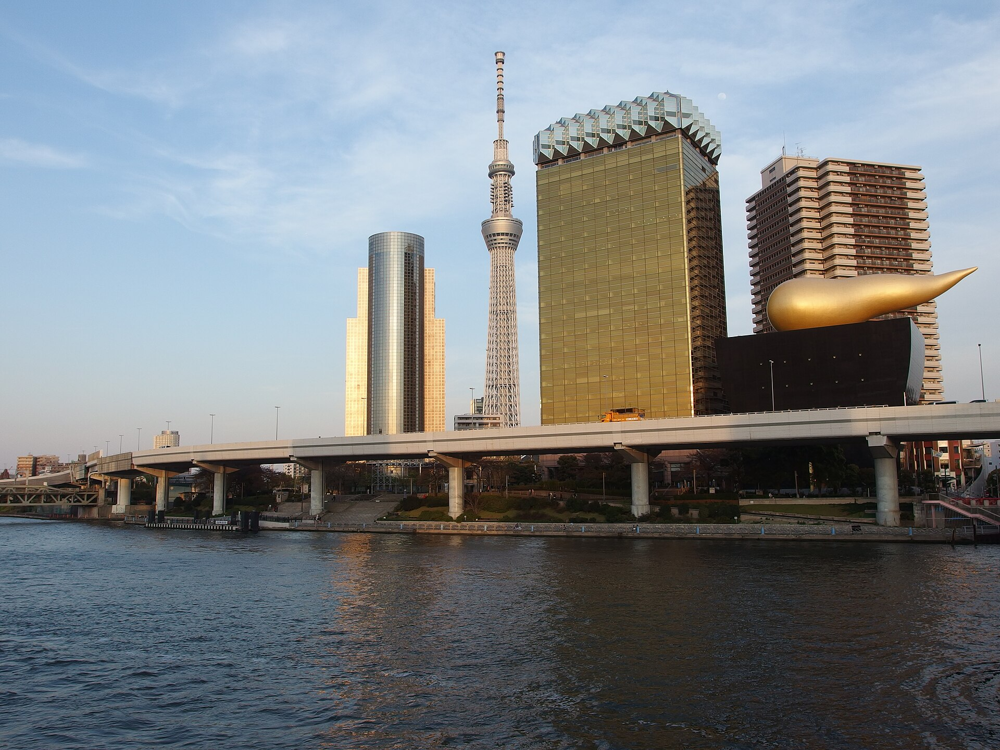
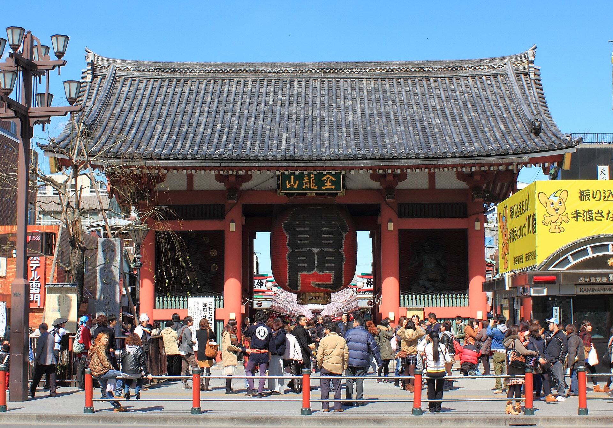
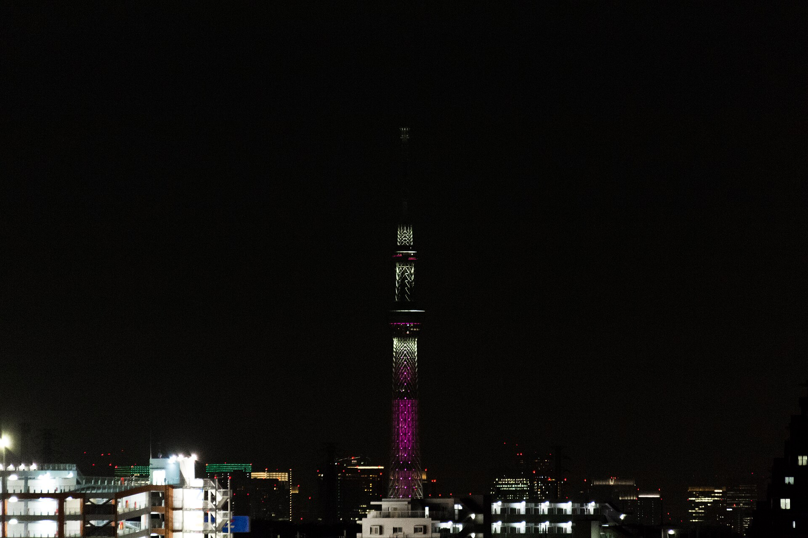

HOME BASE · 2 晚
img').src=this.src">

img').src=this.src">
img').src=this.src">HOME BASE · 住哪一带
东京 · 浅草 / 上野一带
这次东京的两晚，住浅草或上野一带最顺：浅草寺、晴空塔走路就能到（周六的重头戏不用挤地铁），去台场、东京站搭新干线也都方便。浅草更有下町夏日祭的氛围、换浴衣的店密集；上野交通枢纽、选择多。这里给的是"住哪个区域"的建议，具体酒店你们按预算和喜好订。